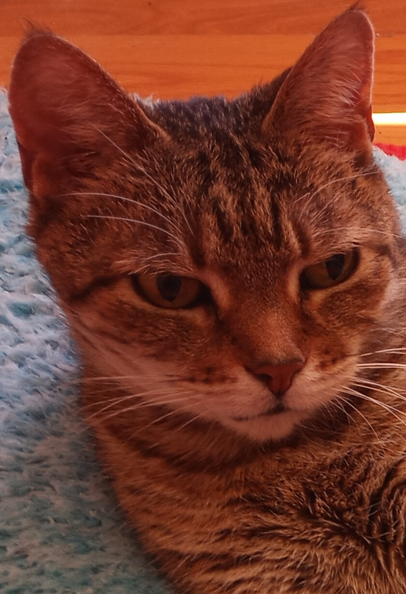

Chief Executive Officer: Nala DeFreece
The eldest and the wisest, Nala "B" DeFreece has been calling the shots for 14 years running and shows no signs of slowing. Not one to be hands-off, one can expect her to show up to supervise just about any project. And she will have opinions.
Firm but motherly, one might find a number of similarities to the NCIS character Leroy Jethro Gibbs. A long day of "boat work" on her fluffy pillow in the window won't stop her from powering through the night to find the truth (and the snacks). No countertop is off-limits. No half-full cup of water is safe.
When she's not punishing wrongdoers or mom-cleaning any other kitten that crosses her path, she can be found in any sunny spot - warming her tummy with her face in the shade.
Vivamus vehicula metus ut sem finibus, eget mollis tortor luctus. Nam quis lacus eget massa congue blandit nec ornare neque. Orci varius natoque penatibus et magnis dis parturient montes, nascetur ridiculus mus. Nam augue tellus, luctus eget auctor nec, ultricies vitae tellus. Mauris semper justo nisl, non euismod nulla malesuada sit amet. Phasellus nec lacus vitae augue commodo egestas id eget metus. Aliquam mi eros, aliquam id blandit at, dignissim sit amet lacus.